The Toybox Bible Adventures
Ordinary toys, extraordinary Bible stories. A family of handmade paper toys puts on homemade productions of Bible stories, and things never go to plan. Kids laugh at the mishaps, then discover the real story of God's Word inside them.
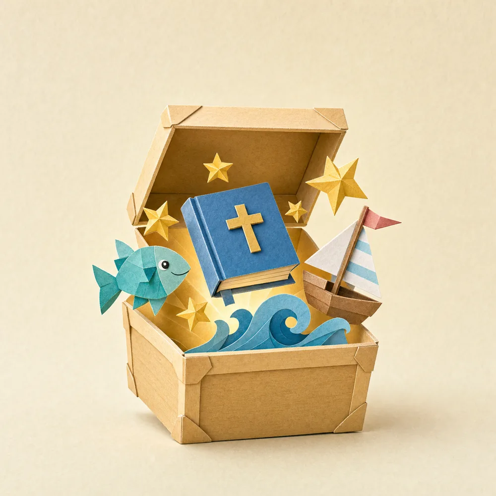
The brand
Brand name
Toybox Bible: the umbrella for books, a kids' Bible, an app, games and videos.
The Toybox Bible Adventures: the picture-book series.
Write "Toybox" as one word with a capital T.
Promise
Every book is two stories in one: a toy mishap kids recognize and laugh at, and the Bible story it echoes, told straight and respectfully by Sassafras.
Voice
Warm, playful, punny and never preachy. The comedy belongs to the toys; the Bible story is never the joke. Each book ends on one simple truth a 4-year-old can say back.
Audience
Ages 3–8 and the grown-ups reading with them: families, Sunday school, children's ministry.
Tagline
Ordinary toys. Extraordinary Bible adventures.
Adapted from Mom's cover line.
Author
Written by Mary Aloi. Inside the books, the toy theater company is still called Storytime Productions; that is the toys' own name for their shows.
The look: handmade paper pop-up
Every page is a real-feeling paper diorama: cut, scored and folded matte cardstock in stacked layers, lit softly like a little stage set. It should look built by hand, never painted digitally or rendered in 3D.
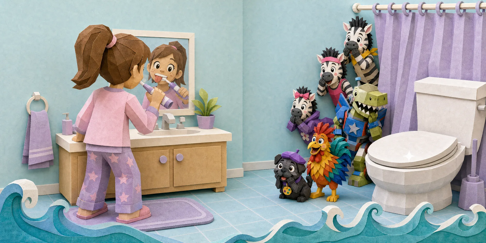
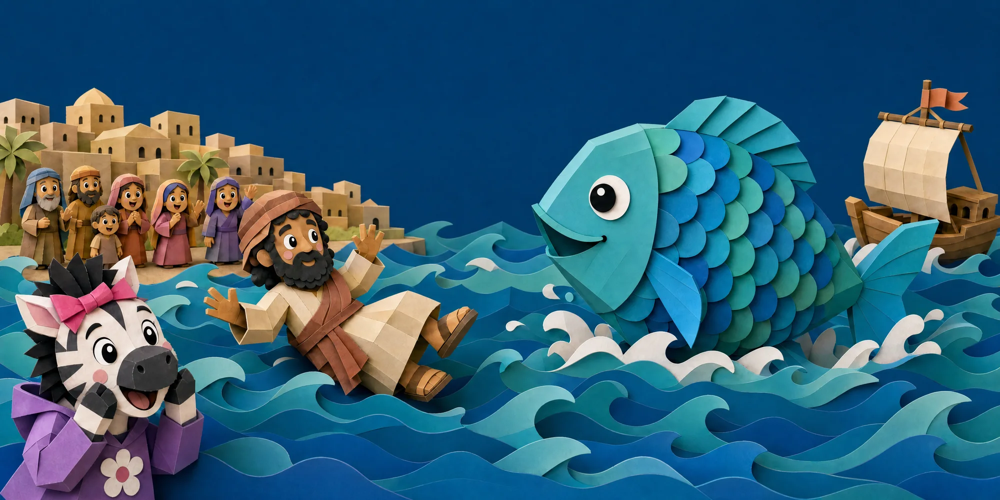
Material
Matte cardstock and kraft paper. Visible folds, score lines, tabs, fiber texture. No gloss, plastic, felt or clay.
Light
Soft warm studio light with gentle contact shadows between layers, like a lit shadow box.
Faces
Simple and friendly: round white paper eyes, black pupil, one highlight, little smiles, pink cheek circles. Same eye style for the whole cast.
Scale
Always toy's-eye view. Rooms, toilets and people are gigantic. Humans appear mostly from the knees down.
Palette
Toy world
Powder Blue
#8AB5CC · walls, sky
Soft Aqua
#BCD3D4 · tile, water
Lavender
#CFBEDA · curtains, Chloe
Sage
#A9BE9B · rugs, plants
Warm Cream
#F6EAD7 · paper, text cards
Honey Wood
#D9A86A · floors, stage
Coral
#E9877A · accents
Sunny Yellow
#F3C64B · stars, highlights
Bible-story world
Deep Navy
#173F63 · night sky, headings
Sea Teal
#07556A · deep water
Sand
#D8C29A · land, Nineveh
Gold
#C9A13B · light, crosses
Curtain Red
#C2463B · stage, brand accent
Ink
#2B2420 · all body text
Typography
Both fonts are free (SIL Open Font License). Minimum 16 pt in print.
Text on the page: cut-paper cards
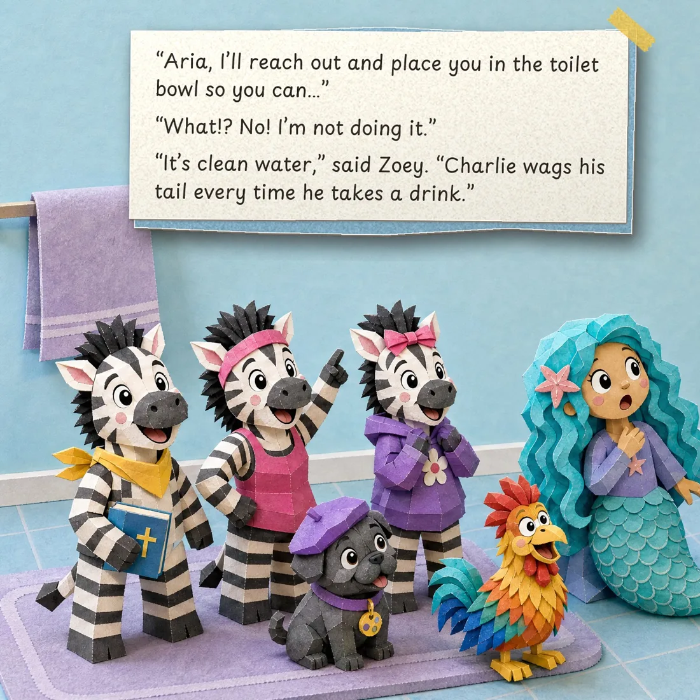
- Text is part of the diorama. Story text sits on small cream cardstock tags with a scissor-cut edge, a coloured backing layer (teal, coral, sunshine, sage, lavender, sky) and a soft contact shadow, sometimes held with a strip of washi tape.
- Small cards, not one block. Break the text into 2–3 short cards per page that wind around the scene in reading order, top-left to bottom-right.
- Sound effects are cut-out letters (THUMP!, HMFFFF!): each letter its own tilted paper piece in Grandstander.
- Generous padding inside every card; text never touches the edge.
- Never cover a face, hands or the key action, and never cross the center fold.
- Titles use a larger taped plaque: series line in Playpen Sans, title in navy Grandstander.
The cast
Seven toys, one family. Their outfits and colors never change from book to book; that is how kids recognize them instantly.
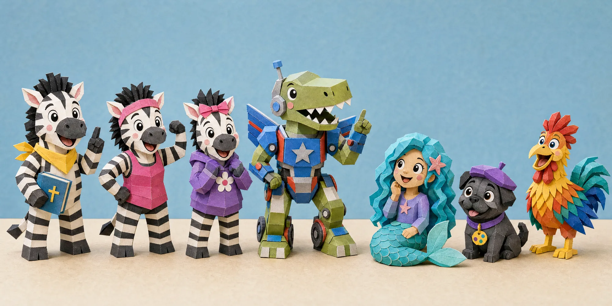
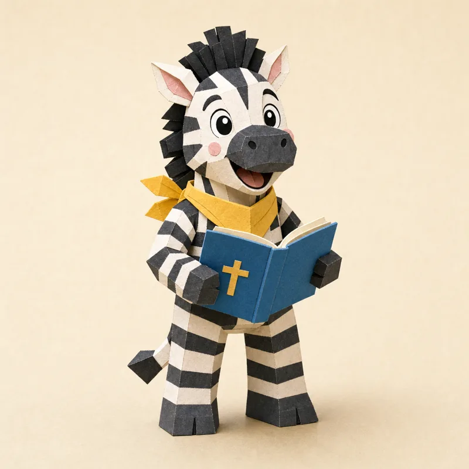
Sassafras
Calm, wise and quick to laugh. He turns every mishap into a Bible story.
- Sunny-yellow bandana
- Small blue Bible with a gold cross
- Spiky black mane, pink inner ears
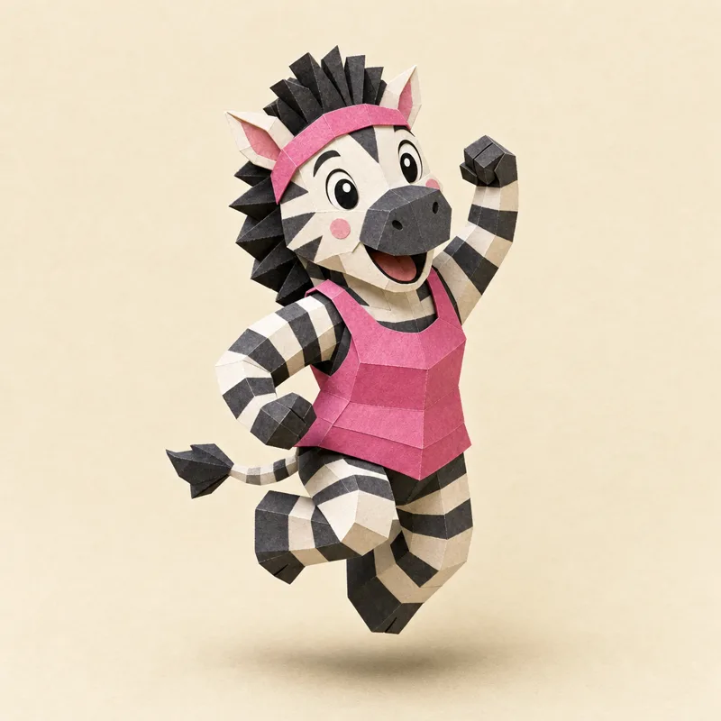
Zoey
Sporty and always moving. She owns the red wagon and lives in Chloe's toy box.
- Hot-pink headband
- Hot-pink tank top
- Usually mid-jump or flexing
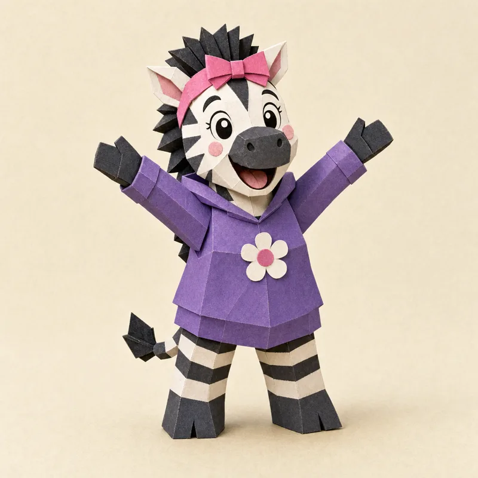
Marcie
Has an appetite for excitement and asks the questions kids are thinking.
- Big pink bow
- Purple hoodie with a white-and-pink flower
- Biggest smile in the room
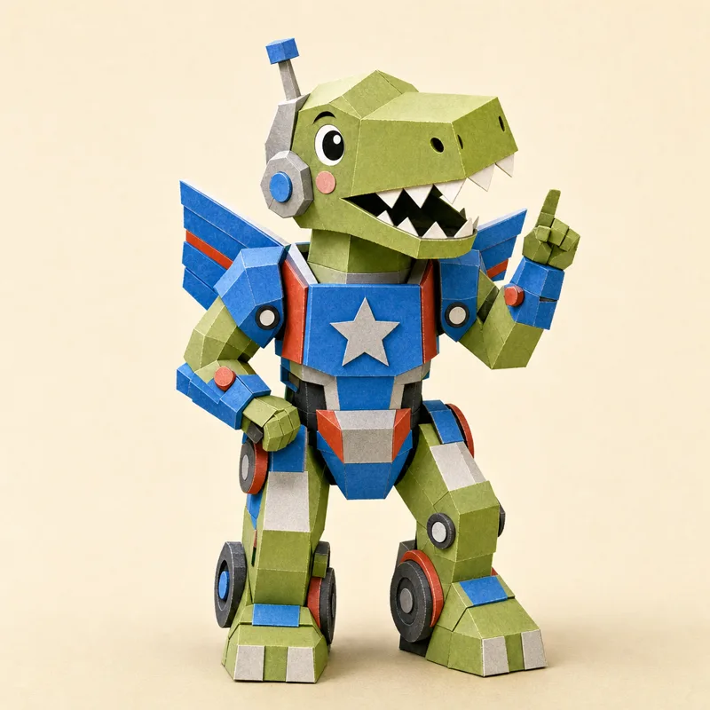
Titus
Loves a ridiculous plan, a pointer stick and a pun. Clearly a transforming toy.
- Green dino in blue, red and silver armor
- Silver star chest emblem, antenna helmet
- Fold-out wing panels and wheels
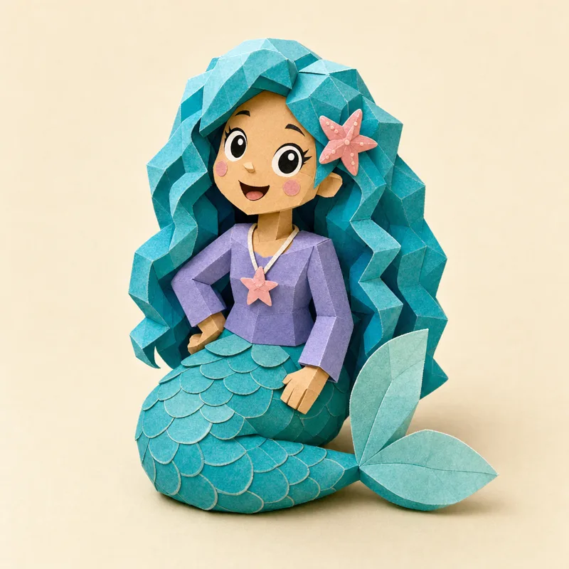
Aria
Dramatic, a little sassy and secretly brave. Gets the worst jobs and the best endings.
- Curly turquoise hair, pink starfish clip
- Periwinkle top, little star pendant
- Teal scaled tail
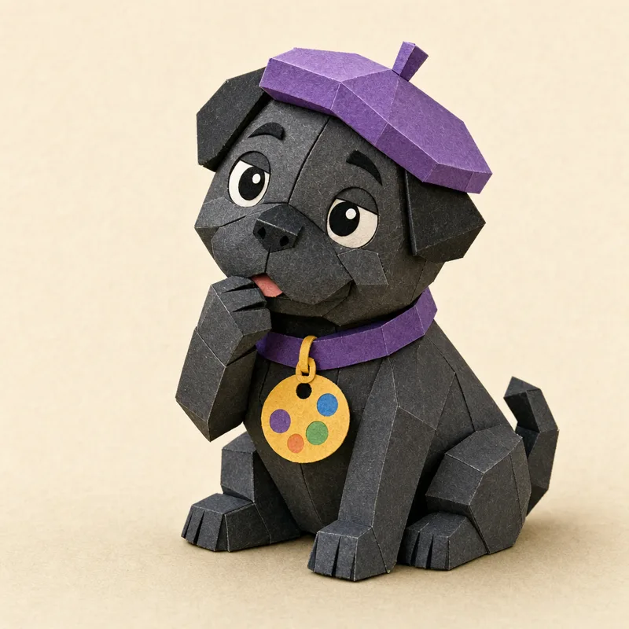
Mia
An artist and a critic. If it isn't believable, she wants no part of it.
- Purple beret
- Purple collar with a paint-palette tag
- Snorts are the danger signal
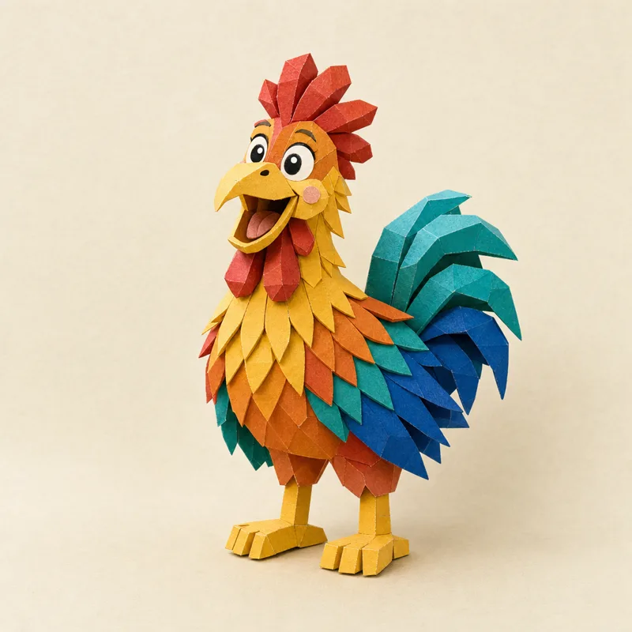
Hans
Keeps time, sounds the alarms and cackles at the right moment.
- Red comb and wattle
- Orange, yellow and red feathers
- Teal, green and blue tail
The house
Benny's room: powder blue, honey floor, the theater's home.
Chloe's room: lavender, pink toy box.
Hallway: cream walls, sage runner.
Bathroom: aqua tile, lavender curtain.
Zoey's wagon: red with yellow wheels.
Humans (Benny, Chloe) are giants. Show them from the knees or waist down, or only in mirrors; the toys stay the heroes.
The Bible-story world
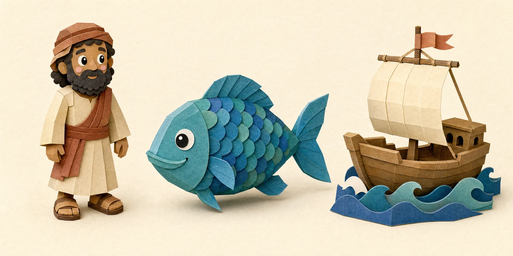
How the two worlds meet
When Sassafras starts telling the story, the Bible world grows out of the toy world on the same page: a shower curtain becomes a sail, a bath mat becomes the sea. The toys stay visible in front, so kids follow both stories at once.
- Bible people are dignified paper figures with warm skin tones and simple robes, never cartoon jokes.
- Big creatures (like the fish) are gentle and friendly: no teeth, no menace.
- Palette shifts deeper: navy, teal, sand, gold.
Do and don't
Do
- Keep every character's outfit and colors identical in every book
- Keep faces and key action away from the center fold
- Leave calm paper areas for text
- Let the toys be silly and the Bible story be true
- Keep everything spotless and kind (ages 3–8)
Don't
- Glossy, plastic, 3D-render or "AI-shiny" looks
- Words baked into the art: all text is set in Grandstander/Playpen Sans afterwards
- Scary creatures, gross-out humor or mocking Bible people
- New outfits or redesigned characters between books
- Showing a physical book, page edges or a spine in page art
The series
Jonah and the Big Fish
Operation Toilet Bowl: the toys need real water for their first production, and Aria ends up playing Jonah in more ways than one.
Format
32-page square picture book, 8.5 × 8.5 in. Title page, cast page, an opening single, 14 spreads and a final single page.
Coming later
More Toybox Bible Adventures, a Toybox Kids' Bible, an app, games and short videos, all using this cast and look.